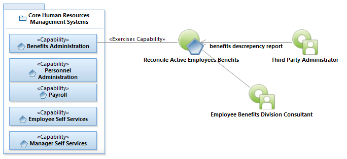
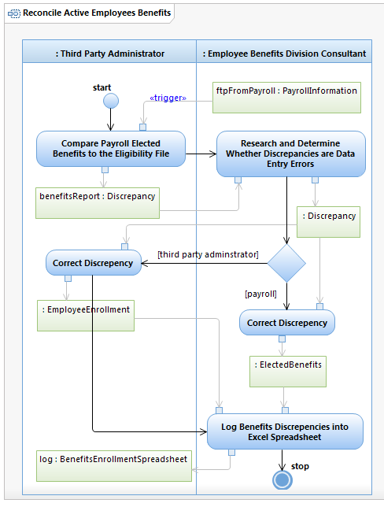

Use Case Model: Reconcile Active Employees Benefits
Architect: Rob Byrd, Chief Enterprise IT Architect
Date Last Modified: 06/18/2012
User Review: Andrea Glasper, Benefits Specialist
Date:
The Third Party Administrator compares the City's payroll information to employee enrollment record and discrepancies are reconciled by the Employee Benefits Division Consultant.
Follow link to Role Definitions

Use Case Model: Reconcile Active Employees Benefits

Activity Model: Reconcile Active Employees Benefits